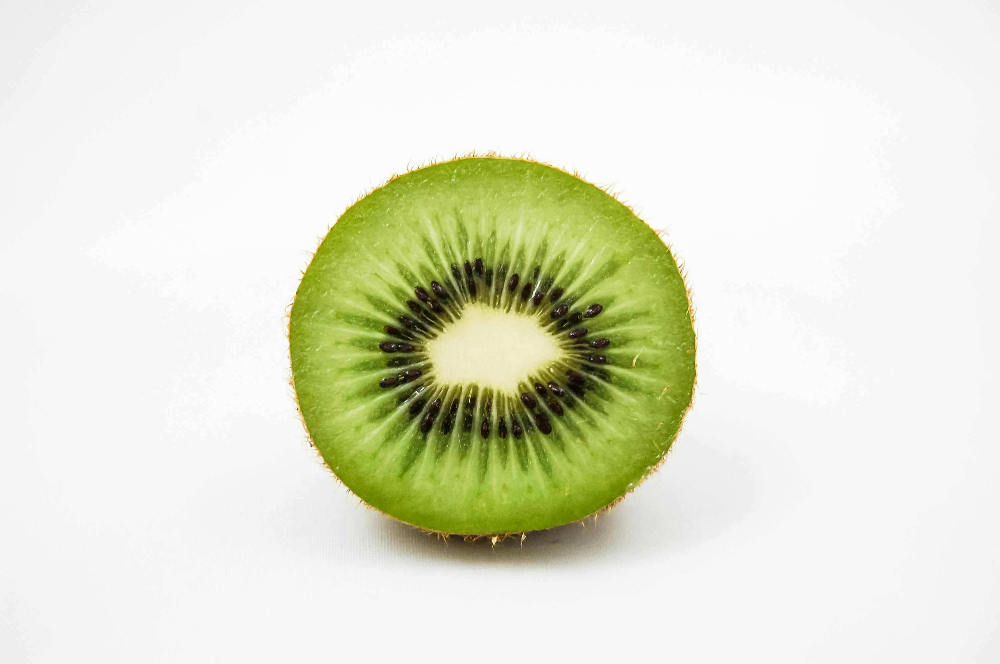

Grass-fed ground beef is one of the most nutrient-dense sources of lean protein. It provides mumerous essential macro and micronutrients, including healthy fats, complete proteins, B-vitamins, zinc, and selenium.
Avocados contain vitamins B6, C, E, magnesium, potassium, calcium, and are a source of healthy fats. They also pair amazingly with some ground beef.
Sweet potatoes are by far my favorite carb source. Not only are they tasty, they are actually a better source of potassium than bananas are.

Kiwis are among the most nutrient-dense fruits. They are loaded with antioxidants and vitamin C, and are also one of the only fruits that will give you a significant amount of vitamin K.